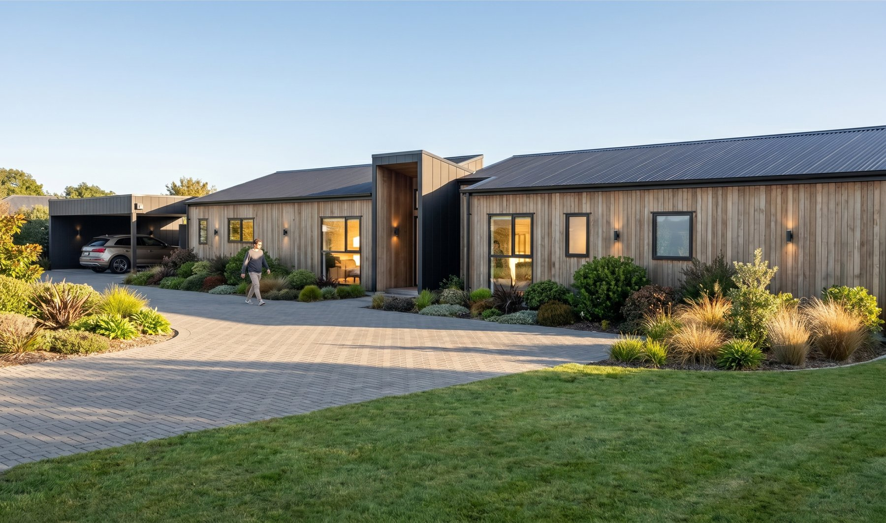
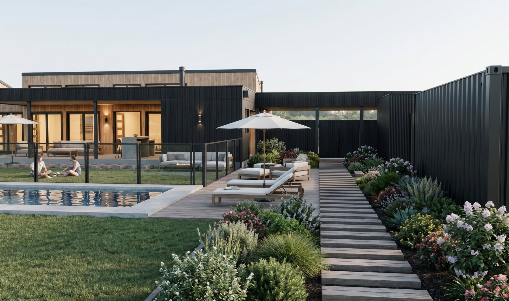
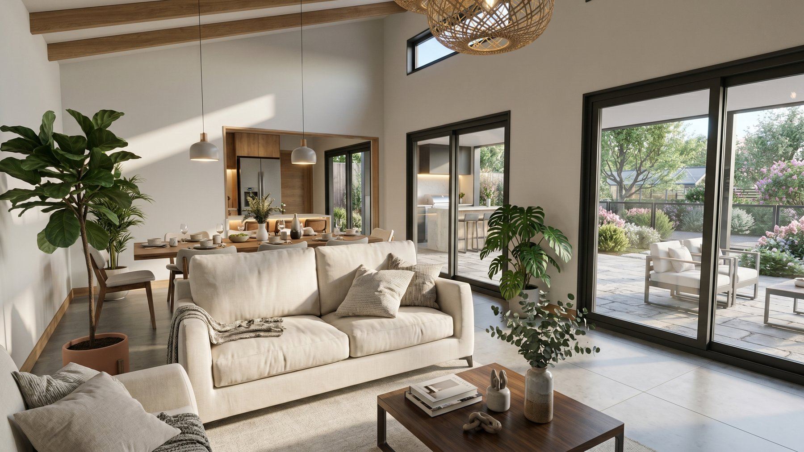
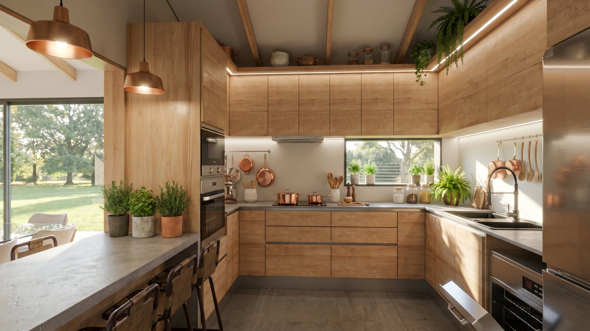
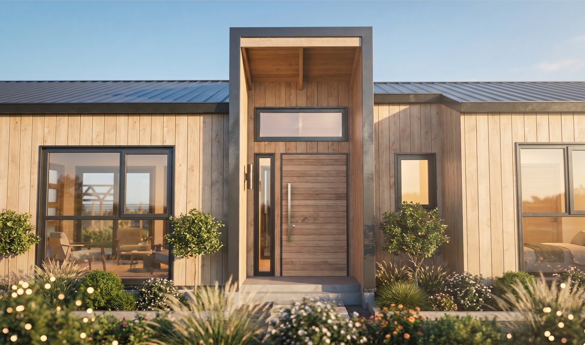

Ficha A-109 · Vivienda unifamiliar
Una casa de un piso en Talca, de diseño contemporáneo y cálido, con living-comedor de doble altura, quincho incorporado y tres dormitorios.





Casa AB se proyecta en un terreno de 5.000 m² en Talca, para una vivienda unifamiliar de un piso de 200 m², resuelta íntegramente en panel SIP. El encargo buscaba un diseño contemporáneo pero cálido, con tres dormitorios y espacios sociales generosos para la vida familiar y para recibir.
El corazón del proyecto es un living-comedor de doble altura, que se abre hacia el paisaje a través de grandes ventanales y aporta luz natural constante a lo largo del día. Un quincho incorporado, en continuidad directa con los espacios sociales, extiende la casa hacia el exterior y conecta con el jardín y la piscina, pensados como una prolongación natural de la vida interior.
La fachada combina revestimientos de madera y metal en tonos oscuros, un lenguaje contemporáneo que dialoga con el entorno rural del sitio sin perder calidez, tanto en el volumen principal de la casa como en el acceso, resuelto con un porche cubierto de doble altura.